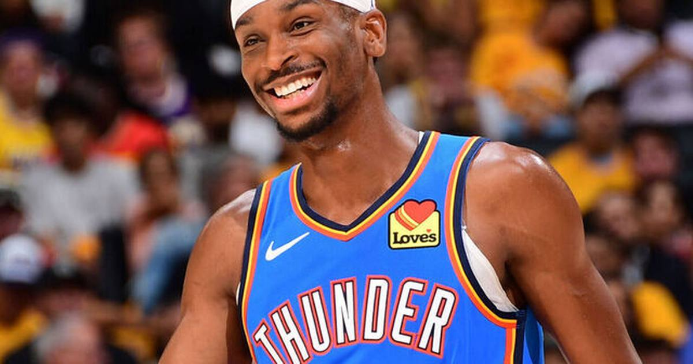

TSL Bets: Thunder -2.5 (-110) at Blazers — SGA is carrying, and Portland's point guard situation is a mess
Shai Gilgeous-Alexander is averaging 29.9 a game and just dropped 43 and 42 in back-to-back games. The Thunder are only laying 2.5 in Portland against a Blazers team starting Scoot Henderson at the point. Take the short number.

The game
Oklahoma City Thunder (8-2) at Portland Trail Blazers (6-3) — 11:00 PM ET, Moda Center, NBC
Thunder -2.5, moneyline Thunder -135, total 226.5 (DraftKings via ESPN). The two teams meet again in Portland on Wednesday.
Injuries — Oklahoma City: Jalen Williams is out after ankle surgery, Chet Holmgren is out with a knee injury (8–10 weeks), Cason Wallace is out after shoulder surgery, and Jaylin Williams (back) and Thomas Sorber (knee) are out too. The Thunder are severely short-handed.
Injuries — Portland: Ja Morant is out with a hamstring injury, Shaedon Sharpe is out with a torn meniscus, Vit Krejci is out with an ankle fracture, and Robert Williams III is resting. The Blazers' backcourt is held together with tape.
Storylines: Shai Gilgeous-Alexander is averaging 29.9 points a game, scored 43 and 42 in back-to-back games last week, and put up 30 in 29 minutes on Saturday against Washington. Portland, meanwhile, is starting Scoot Henderson at point guard — 4 assists against 11 turnovers in four starts, shooting 28.6 percent from the field. Deni Avdija is averaging 22.3 points a game for the Blazers, and Portland has been feisty at home. The rematch comes Wednesday in the same building.
The bet
Thunder -2.5 (-110). This is a short number for the better team, and the reason is the injury report — both teams are missing bodies. But Oklahoma City's missing bodies are frontcourt players, and Portland's missing bodies include its starting point guard, its starting shooting guard and its starting center. SGA is the best player on the floor by a distance, and the Blazers are asking Scoot Henderson to run the offense against the Thunder's defense. Two and a half points is a small price for that gap.
The honest caveat
Oklahoma City is severely short-handed — Williams, Holmgren and Wallace are all out, and that's three starters. If SGA has an off night, there isn't much behind him. And Portland is feisty at home: 6-3, Avdija playing well, and a crowd that gets loud late. The Blazers have covered plenty of short numbers at the Moda Center. This is a bet on SGA being SGA, and that's usually a good bet — but the short-handedness on both sides makes it a sweat.
The pick
Thunder -2.5 (-110). A $10 ticket returns about $19.09. The best player on the floor, laying less than a bucket, against a team starting a point guard shooting 28.6 percent.
If you or someone you know has a gambling problem, call 1-800-GAMBLER.